/workflow-skill-creatorA meta-skill that builds other skills. It runs a four-phase, human-gated pipeline that interviews you about your process, designs the architecture, generates every file, and validates the result against the open standard. The work stops at a gate between each phase and waits for your explicit approval before moving on, so you stay in control as the design takes shape.
# add the marketplace, then install the plugin /plugin marketplace add deremer/workflow-skills /plugin install workflow-skill-creator@workflow-skills # run it, or just describe a 3+ step process /workflow-skill-creator
Use a workflow only when all four hold at once:
If a single prompt would do, the skill tells you to use that instead.